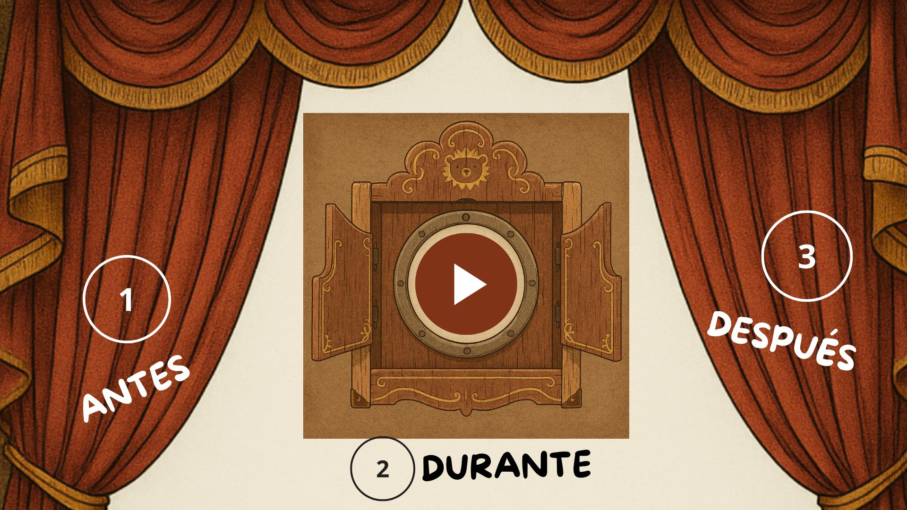

Este recurso se organiza en tres etapas que acompañan los momentos de la lectura: Antes (activar conocimientos previos y motivar la discusión), Durante (visualizar el cortometraje y registrar observaciones) y Después (completar el cuadernillo de interpretación y análisis). Cada etapa está pensada como una guía flexible, que puedes adaptar según las características de tu curso y las necesidades de tu propia planificación.

Organización de la clase (90 minutos)
- Inicio (15 min)
- Visualización del cortometraje (10 min)
- Trabajo con el cuadernillo (40 min)
- Cierre y evaluación formativa (25 min)
*Tiempo aproximado
A continuación se presenta el detalle de cada etapa de la secuencia didáctica.